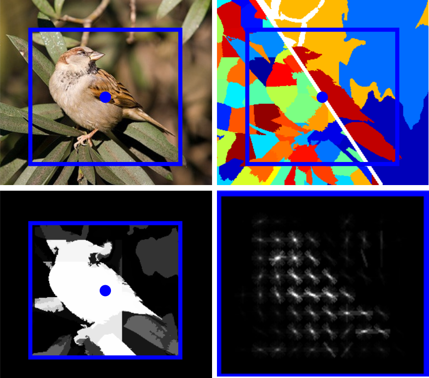

Stavros Tsogkas
 /
/
 /
/
 /
/

Email: tsogkas[at]cs.toronto.edu
Address: 6 King's College Rd., Toronto, Ontario, Canada
Office: PT 398B
I am a postdoctoral researcher at the University of Toronto
working with Sven Dickinson.
Before joining UofT I spent five years
as a PhD student and research engineer at CentraleSupélec,
where I was advised by Iasonas Kokkinos.
My alma mater is the National Technical University of Athens.
Research Interests
I am interested in exploring the use of mid-level elements, such as medial axes and object parts, to improve detection, segmentation and fine-grain recognition of objects. In my latest projects, I have also worked on developing deep learning systems for semantic segmentation in natural and medical images.
News
- I received an outstanding reviewer award for ECCV 2016.
- October 2016: I have moved to the University of Toronto.
- Our work on coregistration/cosegmentation has been accepted at MICCAI.
Publications

*Authors contributed equally

*Authors contributed equally


M. B. Blaschko,
D. Weiss,
B. Taskar,
K. Simonyan,
N. Saphra,
S. Mohamed
PhD thesis
PhD Thesis, Advisor: I. Kokkinos
Center for Visual Computing, CentraleSupelec.